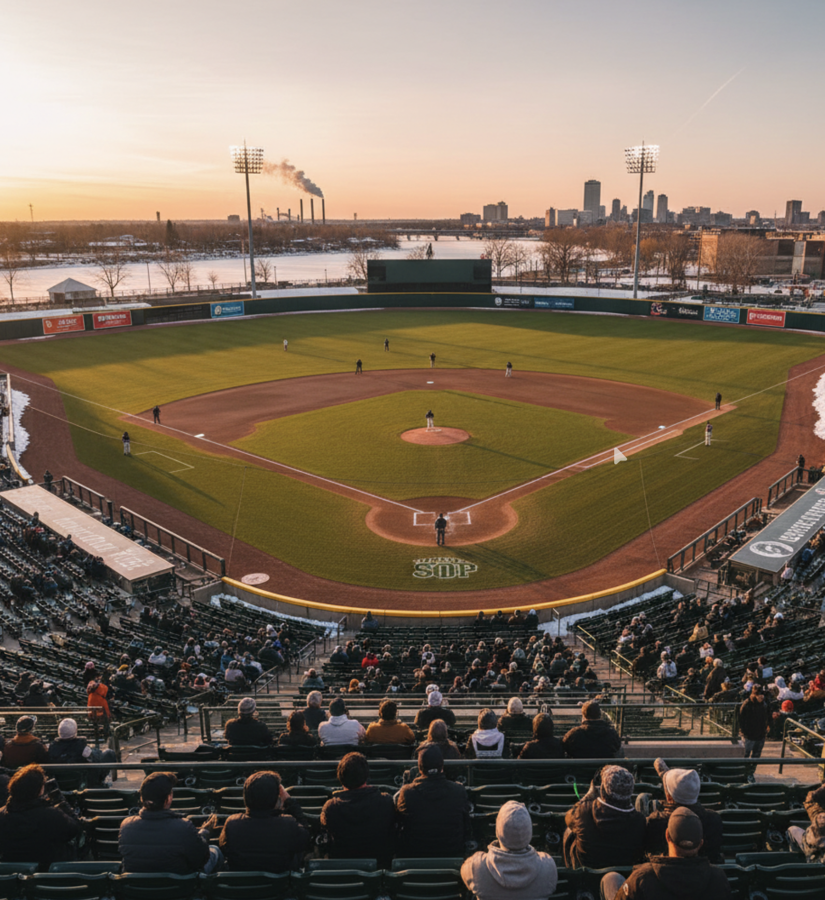
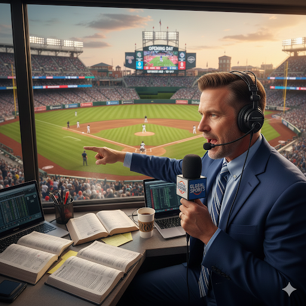
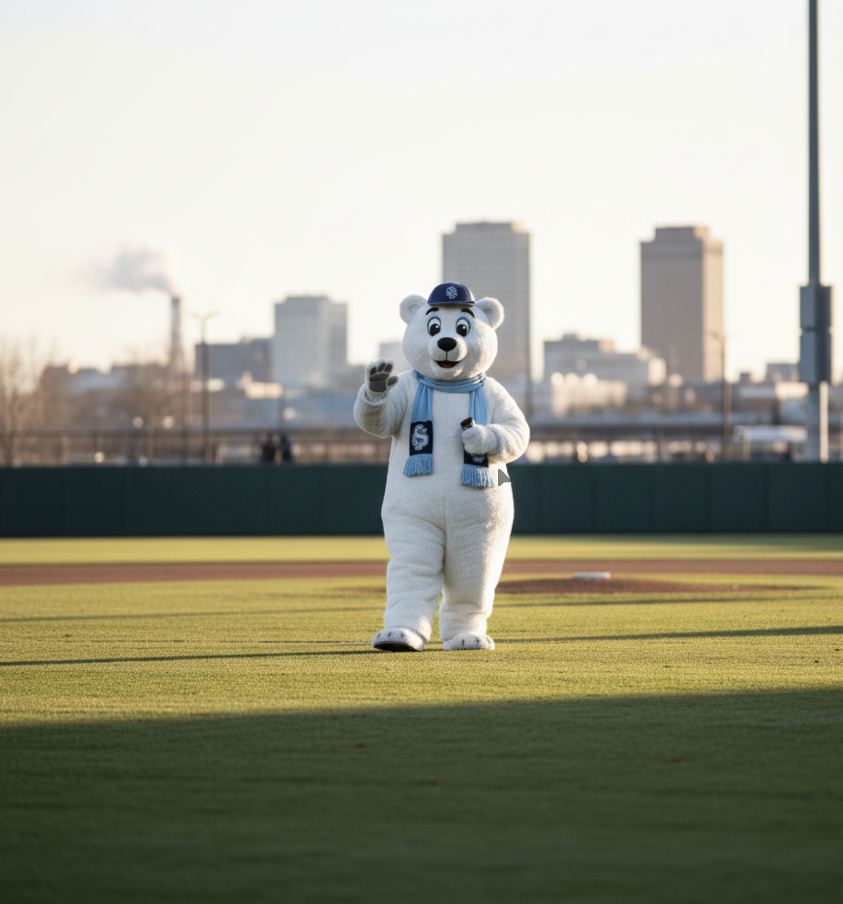
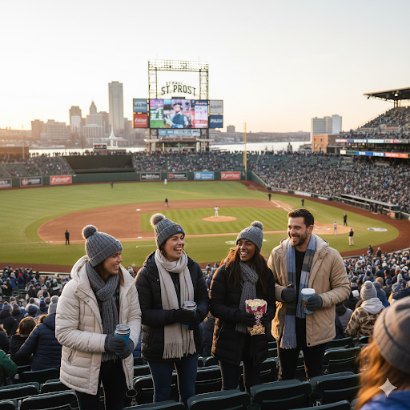

The Frost don’t chase momentum — they remove it. St. Paul plays like the air is heavier here, like every swing needs permission. Their games feel quieter than they should. Not because the fans are absent, but because the noise gets swallowed. Opponents show up thinking it’ll be “cold-weather baseball” and leave talking about the way the game slowed down until it felt inevitable.

Icehouse Field. A low-slung, river-adjacent park that looks temporary on purpose: steel stairs, pale concrete, and wind gaps you can hear. The outfield lights burn a little too blue. On certain nights the whole place looks like a surveillance photo.

Voice of the Frost. Rourke calls games like he’s reading weather data. Minimal emotion, surgical timing, long pauses that make the crowd audio feel louder than it is. When something big happens, he doesn’t shout — he lowers his voice.

A pale, faceless figure in layered thermal fabric and reflective tape — not cute, not scary, just wrong enough to be memorable. Rime moves slowly, like it’s conserving heat.

A standing section in cheap ponchos and matching gloves. They don’t chant. They count. Outs. Pitches. Mistakes. When the Frost turn a double play, the section goes still for one full minute — the Freeze Minute — then resumes as if nothing happened.
| SP | Owen “Frost Line” Kells |
| C | Jae Winton |
| SS | Silas North |